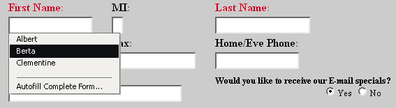
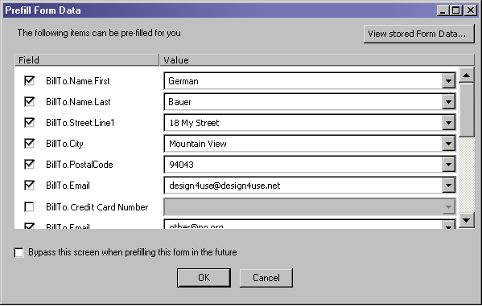
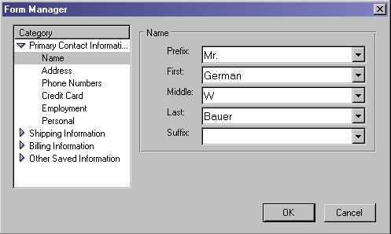
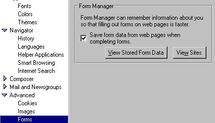

| Mojo Navigator |
UI
Specification
|
|
Automatic Form Fill send feedback to the component specific newsgroup |
Last
Modification:
|
| Author:
German W. Bauer Initial Creation Date: 25 January 2001 |
Status: updated proposal |
|
Quick Index: Related:
|
Feature Team
|
Summary/Overview
Automatic form fill assists users with the common and repetitive task of filling out forms on the web by 'remembering' and applying previously entered data.
UI Goals
Convenient Access
Convenient Usage
Non-intrusiveness
Leverage known behaviors from previous products
Giving user a sense of control
Target Audience
The target user for this feature are Communicator Seamonkey users ,specifically end-users that are looking for convenience features.
User Tasks | Automatic Form Fill
| Basic Tasks | Intermediate Tasks | Advanced Tasks |
| Apply remembered data to a form (1 step fill) | field by field verification/change of data to be entered | Change/update stored data Change default behavior |
Open Issues:
- Use terminology consistently throughout product. Which is better "Autofill Form" or "Prefill Form"? we should use one or the other throughout the product
- now that we have editable menulists (combo boxes) in the saved data dialog, do we still the interview form?
- does it make sense to still keep the 'sites' dialog (access from menu), as we are trying to make form data capture as automatic as possible?
- Longer range: there is discussion about introducing Internet permission zones. Some of the settings shown here may be controlled by such zones
Design Details
Access Points to Form Fill
- a form fill popup menu activated when a field gets accessed
- a dialog to verify what gets filled in
- a Forms Manager menu item
- dialogs to manage remembered data and set behavior
Form Fill Usage
First time encounter when entering form
The form fill feature becomes visible to the user once a web form (with more than two fields) is loaded into the browser. Once an empty field gets either tabbed into or single clicked on or double clicked on (needs user testing), a menu list should popup with a list of data items that can be entered into this field. As in the current 6.0 technology the order of items presented represents is based on most recently used items being presented at the top.
The bottom of the list contains a separator and an "Autofill Complete Form..." menu item which allows the user to fill the complete form without having to from field to field.
Ideally this mechanism would be combined with an autocomplete (masking/filtering the data set against typed in characters) in order to allow scalability for larger data sets such as in commercial form fill applications.

Autofill Complete Form
Users may choose to fill out the complete form by either clicking on the last item in the popup menulist shown above or by choosing "Autofill Form..." from the edit menu. In either case a dialog shows up by default that lets user preview what gets filled into the form fields. This dialog serves two purposes:
Letting the user change what gets filled in for each field (or turn off fill for that field)
Letting the user see all pieces of data that get filled in (preventing sensitive data to get submitted from fields that are currently outside the view)

Checked items will be filled. The data fields are showing combo boxes (aka editable menu lists), so the user can enter a new value in addition to picking one from the previously remembered data. When unchecking a row, all items in the row should show as disabled to indicate that this value will not get filled in.
A button as shown above will allow access to the dialog that shows stored data (see details below).
TBD: should we call this Prefill or Autofill? once decided the terminology should be applied consistently
Remembering Filled out Forms
Data gets added to the data base automatically and once a form gets submitted. Form data may also be remembered by using the menu item "Save From Data" from the Edit menu
Managing Stored Data
With the recent addition of editable menu lists we the "View Stored Form Data" dialog was redesigned (compared to Netscape 6.0) to reduce complexity and allow for easier access to commonly stored data.

There is also a "Sites" dialog available to view sites that were excluded from Form data capture. (Do we still need that dialog?)
Menu:
|
|
|||||||||||||||||||||||||||||||||||||||||||||||||||||||||||||||||||||||||||||||||||||||||||||||||||||||||||||||||||||||||||||
Context Menus &
Preferences
| Over a form with more than 2 non-password non-hidden fields we show the same context menu as in 6.0 , repeating the items that are at the bottom of the edit menu. These two items are to be postioned next to the Clipboard Transfer items. | |||||||||||||||
|
Preferences
Same as in 6.0. Users are able to turn off data capture behavior via this prefs panels in the advanced section, which also allow to view the stored form data:

Error Messages and Dialogs
TBD